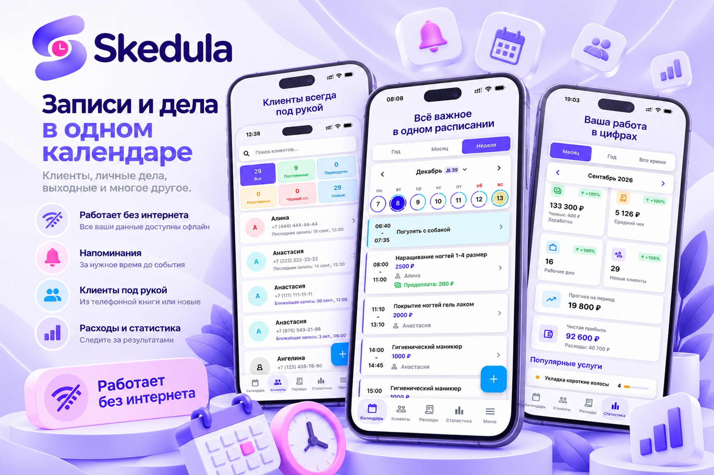

Ваш рабочий день под контролем
Записи и дела
в одном календаре
Планируйте записи клиентов, личные дела и выходные, следите за расходами и результатами работы. Основные возможности доступны даже без интернета.

Всё для удобного планирования
🗓️
Расписание
Записи клиентов, личные дела, выходные и повторяющиеся события.
👥
Клиенты
Контакты, история записей и предстоящие посещения под рукой.
📊
Расходы и статистика
Учитывайте затраты и анализируйте показатели своей работы.
🔔
Напоминания
Настраивайте уведомления о предстоящих событиях.
📴
Без интернета
Планируйте и просматривайте основные данные автономно.
☁️
Синхронизация
При желании подключите Яндекс.Диск для автоматической синхронизации записей и фотографий между устройствами.